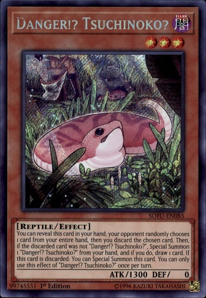
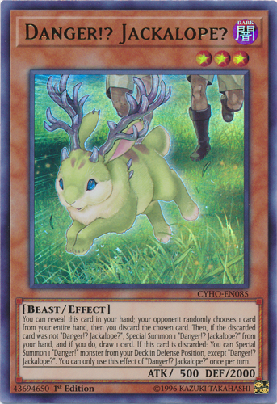
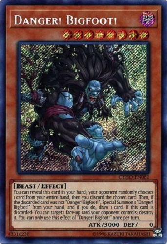
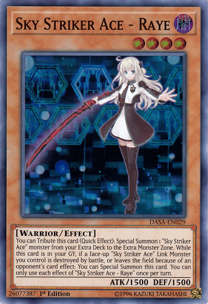
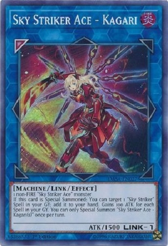
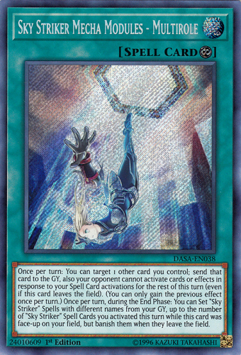
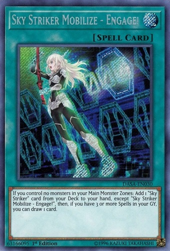

Blog
Those Damned Danger!s
"Draw discard summon draw discard summon draw discard, hey is your turn over yet? It's been 10 minutes."
It was your average winter day, was attending a local having just gotten back into Yu-Gi-Oh. Round 2 of the tournament was approaching, and little did I know, I was about to be in for 40 mintues of pure pain. I had no way to prepare for this archetype of monsters I had hardly seen until that very moment, when I learned about one of the most splashable engines I'd ever seen. The full cancer of special summon Upstart Goblins appeared: Danger!s.

Free Bodies of Pain
There are a myriad of reasons I can complain about Danger!s. So let me first say that at least the archetype has some cool art. Cryptids are a pretty good idea for an archetype. The problem comes, however, when we hit the actual effects of that archetype. Danger!s are entirely dependent upon random chance to make plays. Each Danger! has the effect to reveal itself, and summon itself if it doesn't get randomly discarded by a die roll. Since Danger!s are so generic, and since discarding can sometimes be a huge benefit in the modern meta (Zombies even benefit from it) Danger!s are powerful and really easy to splash into other decks for a huge power boost. The power to keep drawing while making link monsters like Curious and make stupid boards that rip cards from the opponents hand or like what happened to me, where my entire turn was literally skipped.
 Personally, I think the entire archetype just needs to go. As long as they exist, they'll be abused one way or another to do some degenerate strategy. They discourage creative deckbuilding by being so generically splashable, and discourage strategic play by being completely RNG based. Not to mention that the cost to build the engine is actually insane, leaving them out of reach for many a budget player. For a much healthier Yu-Gi-Oh!, the Danger!s must become as actual cryptids: Non-existent.
One Anime Girl, Lots of Rage
"Alright, Engage. Draw. Engage. Draw. Summon Kagari. Get Engage-"
Compared to last post where I happily talked about one of my favorite long time decks, now I'm gonna talk about a deck that I have a personal vendetta against. Introducing the one, the only: Sky Strikers.
 One Protagonist
So if you're unaware, Sky Strikers is an archetype that released May last year, and immediately become a top tier deck. The deck has shown incredible consistency in it's ability to steadily grind the enemy out of resources while continuing to add cards to hand. The deck consists mostly of spell cards which are themed as mecha upgrades to the anime girl above: the Sky Striker Raye. She's the only main deck monster of the archetype. All the other monsters of the archetype are in the Extra deck, which are her in various different mech outfits. Theming wise, it's pretty cool. It's like a classic mecha anime show. The way the deck plays, however, doesn't really do it for me.
 Massive Card Advantage
Engage and Multirole are cards that cause me much physical pain. Engage searching any card in the archetype combined with a free draw just generates consistently massive advantage, whilst multirole ensures that the cards in the graveyard come back to haunt the opponent for another round. Getting hit by multiple Widow Anchors, and having either your effects negated or your monsters just straight up taken is very painful, especially when it goes on turn after turn. The deck even has the potential to win in one turn by stealing enough monsters to make Borrelsword, which adds insult to injury.
The deck has consistently won event after event, to the point that many players are starting to get sick of it. After almost a full year of never having been targeted by the banlist, I think the time has come for the deck to receive some hits. Personally, I'm a fan of hitting Engage to only 2 copies allowed, and limiting Kagari to 1. This lowers the consistency of strikers, but doesn't completely disable them. Honestly, I wouldn't mind never seeing the deck again, but as long as it gets hit just a bit, I'll be happy. I don't think decks should be allowed to be this consistent while generating such insane advantage. With a hit to Strikers, I think the metagame will get a bit healthier, and a little less weeby.
A Love for the Undead
"You can't summon that. All your monsters are zombies."
Hey everyone. First post of my blog here, and I thought I'd start it all off by talking about one of my all time favorite deck types: Zombies.
The Undead Rise Up
Ever since I was a wee lad and first received a Zombie structure deck, the play style always seemed so cool to me. In line with how zombies are, it focuses on turning your opponents monsters into Zombie types to disrupt them and make your own zombies stronger. It also involves a lot of graveyard revival shenanigans, much in the way zombies come back from the dead. It's a fun control idea that still lives to this day despite Zombie World being older than dirt.
The Modern Variant
Relatively recently, Zombies received new support in the form of the Zombie Horde structure deck. It features many of the support cards zombies have received over the years, such as Uni-Zombie and Shiranui Solitaire, as well as completely new cards that focus on supporting Zombie World, like Necroworld Banshee who can activate it using her effect, and Glow-Up Bloom, who can summon out zombies while Zombie World is out on the field. All of these cards exist to support two purposes: Synchro summoning powerful monsters, and to bring out the newly introduced Zombie boss monster: Doomking Balerdroch.
He makes for an absolute beast of a boss monster, with the ability to recur himself from the grave every standby phase, as well as one monster negate and one monster banish each turn. Going up against this monster can be a big deal for many decks focused on monster effects. On top of all that, he's got some sick ass artwork, which all culminates to make him one of my favorite monsters ever created in this game.
The Downside of the Dead
Unfortunately, this deck isn't all brains and gains. When this deck bricks, it bricks HARD. Despite having strong plays, the deck has many consistency issues. The best zombie search cards we have are Pyramid Turtle, who needs to be destroyed by battle, and Goblin Zombie, who is a big brick in hand. The deck also loses heavily to Handtraps like Ash and Effect Veiler, as well as the ever so common Called By The Grave, which one will often lose Doomking to.
Nevertheless, in spite of all that, I love this deck as if it were my son, and I'll continue to represent it at my local scene whenever I can. And maybe one day, Konami will answer my prayers and zombies will rise to take the meta.